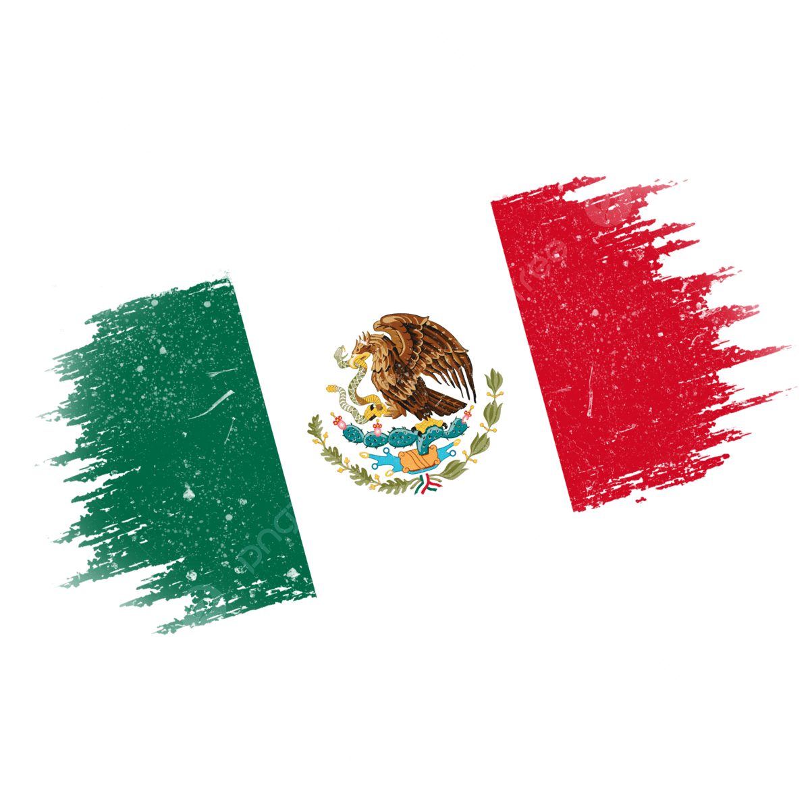
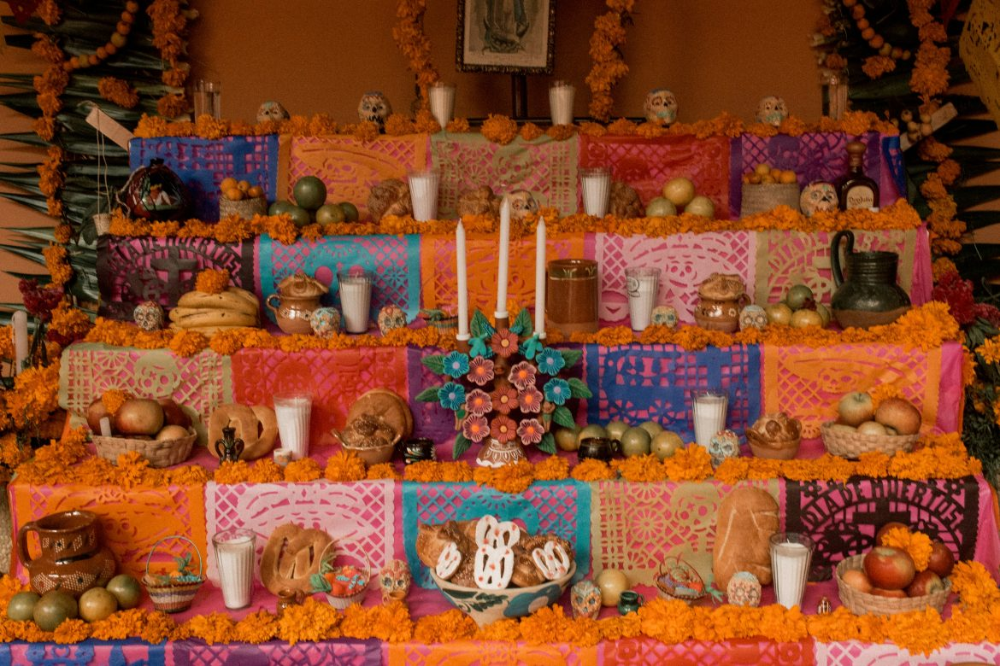

México
en el mundo
¿Cómo nos ven y quién construye esa imagen?
Un proyecto de Humanidades Digitales que analiza cómo se construye la imagen de México en el exterior — qué actores la producen, qué canales la distribuyen y qué versión del país llega al mundo.
La imagen internacional de México es el resultado de múltiples fuerzas en tensión: diplomacia oficial, diáspora, industrias culturales y medios digitales. Este proyecto examina cómo operan esas fuerzas y qué imagen producen.

¿Qué es la imagen de un país?
La imagen que proyecta México en el exterior no es el resultado de una estrategia única ni de una sola institución. Es el producto de múltiples actores — estatales y no estatales — que operan simultáneamente: cancillerías, comunidades migrantes, industrias culturales, medios de comunicación y redes digitales.
Desde la perspectiva del poder blando, la capacidad de un país para influir en otros depende menos de su fuerza militar o económica que de la atracción que genera su cultura, sus valores y su narrativa. México posee recursos culturales extraordinarios, pero su proyección internacional compite con narrativas que el Estado no produce ni controla: el narco en Hollywood, la migración en los medios anglosajones, la violencia en los rankings de seguridad global.
Este proyecto analiza, a través de herramientas digitales, qué imagen de México circula en el mundo: quién la produce, qué canales la distribuyen y qué tensiones revela entre la proyección oficial y la circulación espontánea.
El momento es particularmente relevante: en 2026, México co-organiza la Copa del Mundo junto a Estados Unidos y Canadá. Es la mayor vitrina de soft power que el país ha tenido en décadas — una oportunidad de proyectar su imagen ante audiencias globales de forma deliberada. La pregunta es si el Estado sabrá aprovecharla, o si la imagen que llegue al mundo será, una vez más, la que produzca espontáneamente su propia gente.

"El poder blando es la capacidad de obtener lo que quieres a través de la atracción en lugar de la coerción. La cultura es una de sus fuentes más importantes."— Joseph S. Nye Jr., Soft Power, 2004
¿Qué dicen las noticias de México?
Se utilizó Voyant Tools para analizar un corpus de titulares y resúmenes de AP News — la agencia de noticias más distribuida del mundo — obtenido de una búsqueda sin filtrar del término "Mexico". Los resultados revelan qué narrativas dominan cuando el medio más influyente del mundo habla del país.
El corpus incluyó 85 artículos publicados entre 2025 y 2026, procesados en Voyant Tools con un total de 908 términos únicos. Las tres palabras más frecuentes — world (37), cup (33) y cartel (29) — condensan la tensión central de la imagen de México en la prensa internacional: un país que organiza el evento deportivo más grande del planeta y enfrenta simultáneamente una crisis de seguridad protagonizada por el crimen organizado.
El campo semántico de la violencia domina claramente: cartel, violence, killing, drug y crime acumulan más de 70 menciones. En contraste, el campo cultural — mezcal (5), tradiciones, identidad — aparece de forma marginal. Notable también la presencia de Cuba (12), que refleja el rol de México como actor regional de cooperación.
México en el mundo: una historia
La imagen de México en el exterior no se construyó de un día para otro. Estos momentos muestran cómo el país fue imaginado, representado y reposicionado a lo largo del siglo XX y XXI — por el Estado, por Hollywood, por sus propios artistas y por la historia.
México en el mapa
Ciudades donde la presencia cultural mexicana es activa y documentada — desde comunidades de la diáspora hasta festivales, restaurantes e institutos culturales de la SRE.
Haz clic en cada marcador · OpenStreetMap © contribuidores · Selección no exhaustiva · 2026
La comunidad mexicana más grande fuera de México. Barrios como Boyle Heights son epicentros de cultura chicana: muralismo, gastronomía y festividades que reinventan la identidad mexicana desde la diáspora.
Diáspora · Muralismo · Identidad chicanaEl MoMA colecciona arte mexicano desde los años treinta. La alta cocina oaxaqueña es hoy referencia de distinción cultural. Una imagen de México sofisticada y mediada por las instituciones.
Arte · Alta cocina · RepresentaciónEl Instituto Cultural de México en Berlín es uno de los más activos de Europa. Organiza ciclos de cine, exposiciones de arte contemporáneo y eventos gastronómicos que posicionan a México en el circuito cultural europeo.
Instituto Cultural · Arte contemporáneo · EuropaFrida Kahlo fue aclamada aquí antes que en México. La representación cultural se construye muchas veces desde afuera. El arte mexicano contemporáneo circula en sus galerías y bienales.
Arte · Representación · Soft powerNexo histórico con América Latina. Festivales de cine, literatura y gastronomía mexicana de alto perfil construyen una imagen renovada del país en Europa hispanohablante.
Cine · Literatura · GastronomíaEl Día de Muertos se celebra en festivales locales y el taco se reinventa con ingredientes japoneses. El caso más claro de cómo un símbolo cultural mexicano se resignifica al cruzar fronteras.
Apropiación creativa · Resignificación